The feel
Tech-noir is science fiction set in film noir's world of crime, murder, mystery, obsession, fatal women and men, and shifting identities.1 Its technology rescues nobody: the genre, named after a nightclub in The Terminator, presents technology as a destructive force,2 and Paul Meehan, who wrote a history of the genre, describes tainted technology casting long shadows over the darkness already in people.1
It borrows noir's look as well as its stories:1 stark high-contrast light, rain-soaked streets, halos round the street lamps, neon signs and cigarette smoke drifting through shadow.3 Blade Runner, the genre's model,1 puts all that in a future city that looks jacked up just enough to work at all.4 Its searchlights reach into homes through the windows, and its cinematographer meant them as a supervising force that invades your privacy.5
- smoke-filled
- watched
- patient
- wired
- exhausted
- after midnight
Where it comes from
The genre takes its name from the nightclub in James Cameron's The Terminator (1984).2 Paul Meehan's history of it starts with German silent films such as Metropolis, takes in Godard's Alphaville (1965) and treats Blade Runner (1982) as the paradigm.1 Alphaville mixed science fiction with film noir and shot its city of the future in real Paris locations, without sets.6 In games, Hideo Kojima's Snatcher (1988) borrowed a lot from Blade Runner by his own account,7,8 Westwood made a Blade Runner game in 1997,9 and Bloober Team's Observer put a detective in a run-down Krakow tenement.10
Core elements
High-contrast backlighting
Ridley Scott felt the photography of Citizen Kane came closest to the look he wanted for Blade Runner: high contrast, unusual camera angles and shafts of light.5 Jordan Cronenweth lit faces with soft light from the front, often from below, and put a hard light behind them.5 His backlit whiteouts, which leave the actor dark in the foreground, are the effect John Alton went for in the 1947 noir T-Men.11
Smoke and shafts of light
Cronenweth named contrast, backlight, smoke, rain and lightning as what gave Blade Runner its moods.5 A shaft of light needs something to pass through, so the sets were filled with smoke, which the story's polluted city justified.5 Classic noir had the same weather, with rain-soaked streets and cigarette smoke wafting through shadows.3
Searchlights through windows
Much of Blade Runner's night photography is lit through windows, by searchlights, signs or lightning.5 The searchlights hang from airships that sweep the city for advertising and crime control, the way moving searchlights watch a prison.5 One of the hallmark shots of classic noir is a room sliced into horizontal slats of light by a venetian blind.12
Retrofitted city
Scott expected future cities to bolt new services onto the outside of old buildings rather than rebuild them: "You wear your guts on the outside."4 Syd Mead called the result an "accumulative-accretion look", with a panel refitted here and a larger unit clapped on there because the old one didn't work.4
Period dress and decor in the future
Blade Runner is set 40 years in the future and also 40 years in the past: 40-year-old clothing styles, a Philip Marlowe detective look and a lot of Art Deco.4 Observer imagines the future as if from the end of the 1980s, with old PCs, the sound of floppy discs booting and a picture a little like old VHS tape.10,13
Detective machines
The detective works through devices. In Westwood's Blade Runner you move around a photograph in the ESPER to uncover clues, and test suspects with the Voight-Kampff machine.9 Observer's detective scans rooms with retinal implants, in UV for electronics and Bio for biological traces, and plugs into people's neural implants to search their memories.10
How to do it
Light from behind and below
Light faces softly from the front and put a hard backlight behind them, as Cronenweth did.5 For fill from below he used glowing umbrella handles, water and reflective surfaces.5 Warm, soft uplight in front with hard backlight and smoke behind is probably the most characteristic Blade Runner set-up.5
Keep the smoke density constant
Shafts of light need smoke to show,5 and its density has to stay constant, because a very subtle change makes a dramatic change in contrast.5 For strong shafts without heavy fog, keep the overall fog density low but give the sun a high volumetric scattering intensity and set the fog's scattering distribution to nearly 0.9, or raise the density only where it is needed with local volumes.14
Light through venetian blinds
For beams through blinds, give the slats real geometry and let the spot light behind them cast volumetric shadows, so its shadows show in the fog. That light then costs about three times as much.14 The cheap alternative is a cookie, a mask on a spot light that fakes light coming in through a window,15 and it passes for a real shadow as long as nothing moving can enter it.15
Light the streets with neon signs
On Blade Runner's street set, dozens of neon signs did the lighting.5 Signs in shot ran on dimmers set just above the level where they would start to flicker, while signs out of shot stayed at full brightness as the main light source.5 Where the existing signs weren't enough, the crew made new ones and put them wherever they wanted.5
Retrofit the set
Start from a reason and let the details follow. Mead began with air pollution, which meant bigger air conditioning units, which meant a lump on top of the car.4 Overlay pipes, ductwork and signs on existing facades, and leave interiors patched and grimy, down to wires hanging out where someone tore a panel off.4
Design investigation devices
Make investigation a matter of operating machines. Westwood's ESPER lets the player move around a photograph to uncover clues, with the same monotonous click as in the film,9 and Observer's implants switch between a UV view for electronics and a Bio view for biological traces.10
Pre-render the scenes
Westwood rebuilt key sets from the film in 3D software and ran the game at 640x480 in 24-bit colour at 15 frames per second.16 The lead character had 20,000 polygons, and many minor ones fewer than 3,000.16 The smoke and mist needed 24-bit colour, so the team simulated it on 16-bit cards with animated dithering.16
Cheat sheet
- Light
- Soft front, hard back, warm uplight5
- Smoke
- Constant density, judged by eye5
- Volumetric fog
- Low density, scattering distribution near 0.914
- Neon in shot
- Dimmed to just above flicker5
- Window light
- Spot light with a cookie15
- 1997 frame
- 640x480, 24-bit colour, 15 fps16
- 1997 polygons
- 20,000 for the lead, under 3,000 for minor characters16
- Era
- 40 years ahead and 40 years back4
Do
- Give every light a reason to be there. Blade Runner's searchlights come from passing airships, and its umbrellas glow from fluorescent tubes in their shafts.5
- Bring in your own past. Observer is furnished with the décor that people who grew up in 1980s and 1990s Poland remember from their family homes.10
- Use holograms to cover the grime, not to replace it. In Observer they are plastered all over the tenement to hide the gritty world beneath.13
- Hold back on effects. Bloober Team found the hardest thing was not to overdo them.10
Avoid
- The pristine, austere, clean future that Scott says most films show. His feeling was that it would go the other way.4
- Space-age costume. Scott wanted to avoid what he called "the diagonal zipper and silver-hair syndrome".4
- Darkness that hides the clues. Nintendo World Report found the Enhanced Edition of Westwood's Blade Runner so dark that clues and evidence could be completely invisible.17
- Retelling the film. PC Gamer's biggest problem with Westwood's game is how closely its story mirrors Blade Runner's.9
Tools and tutorials
- The Basics of Lighting for Film Noir
Filmmaker IQ on how classic noir was lit.
- Lighting with gobos and moving shadows
How to put a slat pattern on a light in Unreal Engine 5.
- Cinematic fog and volumetric god rays
Josh Toonen on getting beams to read without drowning the room.
- Volumetric Fog
Epic's settings for light shafts in thin fog, and the cost of volumetric shadows.
- Light cookies
The same blinds trick in Unity.
- B612 Mono
The monospaced face this page uses for its data.
Palette
Sampled from Observer, the ESPER in Blade Runner (1997), Snatcher and Syd Mead's Spinner. Amber is the warm lamp. Green is the machine looking back.
Feel the vibe
In motion
Listen
From The Terminator, the film whose nightclub gave tech-noir its name.2
YouTubeWestwood couldn't get the rights to Vangelis's score, and Klepacki's version for the game is near-identical.9
YouTubeSnatcher's music for creeping dread. Kojima sang his own made-up lyrics to it so often that the team learned them.7
YouTubeNamed for Neo-Kobe, the city where Snatcher takes place.7 Listen to how few voices it needs to set a night-time mood.
YouTubeFrom the wider synth scene, titled after the genre. Darker and heavier than the film and game scores.
YouTube
More references
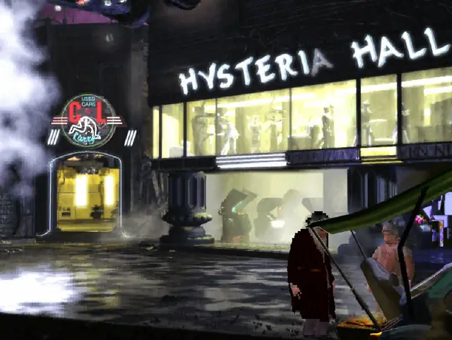
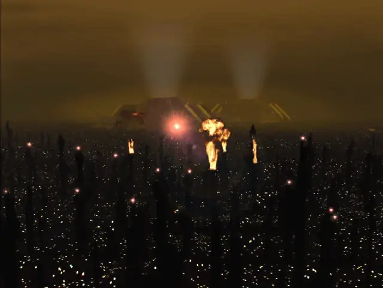
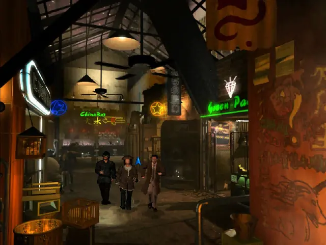
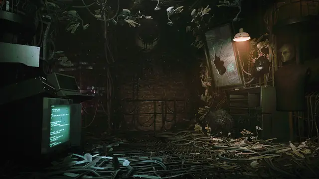
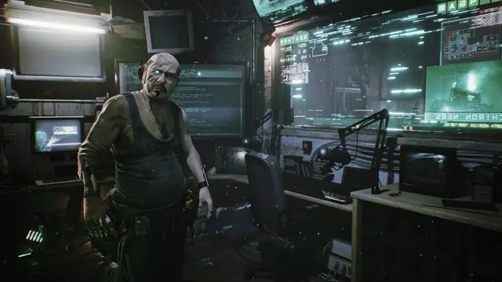
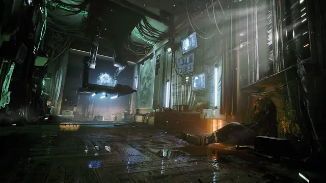
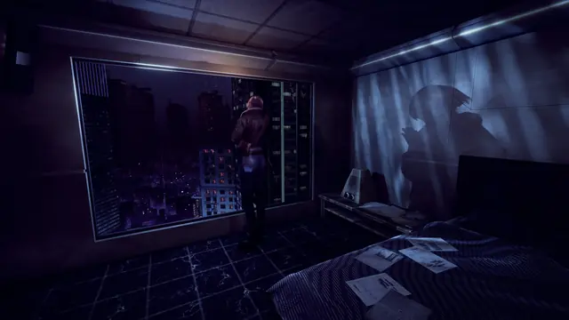
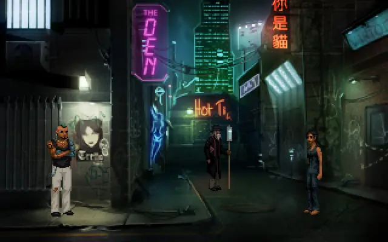
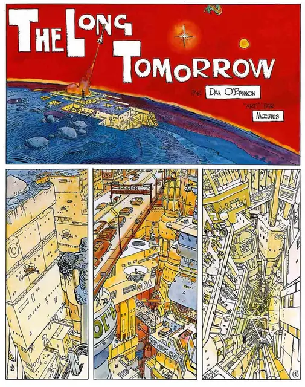
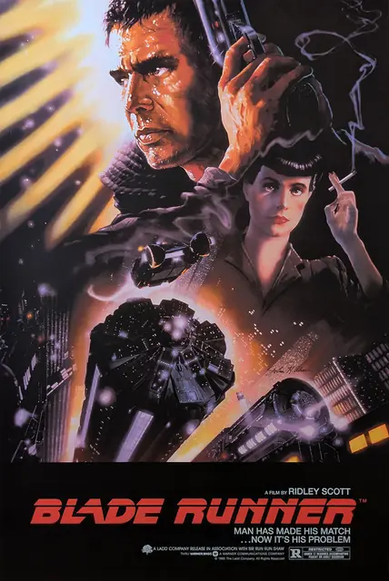
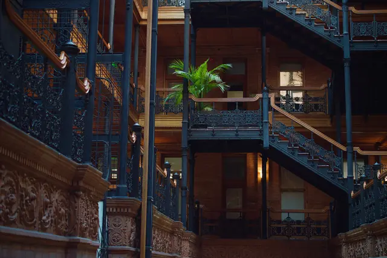
Games
- Snatcher
By Kojima's own account it borrowed a lot from Blade Runner.8 Study the small comic panels that give each character a face.7
- Rise of the Dragon
Study its painted scenes, closer to a comic than to a film.
- Blade Runner
Pre-rendered rooms, voxel-based characters and an ESPER for finding clues in photographs.9
- Technobabylon
Study how sparingly its pixel-art streets use neon.
- Observer
A detective in 2084 Krakow who hacks into people's memories through their neural implants.10 Study its old PCs and VHS-like picture.13
Film, art and more
- Blade Runner
Study the backlight, the smoke and the searchlights through the windows.5
- The Terminator
The film whose nightclub gave tech-noir its name.2
- Alphaville
Godard's secret agent against the computer that runs a city, shot in real Paris locations with no sets.6
- Syd Mead
Blade Runner's "visual futurist". Hired to design its vehicles, including the Spinner, he went on to draw much of its city.4
- The Long Tomorrow
Moebius and Dan O'Bannon's comic. Set it beside Blade Runner and compare the two vertical cities.
- Dark City
Study how far it pushes the dark.
Sources
- 1Review of Paul Meehan, Tech-Noir: The Fusion of Science Fiction and Film Noir
- 2The Terminator at 40: James Cameron's dark vision is more relevant than ever
- 3Film noir
- 4Discussing the Set Design of Blade Runner
- 5Blade Runner: Cronenweth's Photography
- 6Jean-Luc Godard's dystopian sci-fi classic Alphaville turns 50
- 7Snatcher Is Cyberpunk Noir At Its Best
- 8Snatcher – 1992 Developer Interview
- 9Revisiting Westwood's atmospheric Blade Runner adventure game
- 10Probing the Minds Behind the Cyberpunk Horror of >observer_
- 11Pushing Low-Key Limits: A Cinematographic History of Noir and Neo-Noir
- 12Kino Releases Three Anthony Mann Film Noir Classics to Video
- 13Observer Interview: Nano-Horrors
- 14Volumetric Fog
- 15Introduction to cookies
- 16Interview with Louis Castle About Westwood's Blade Runner
- 17Blade Runner: Enhanced Edition (Switch eShop) Review